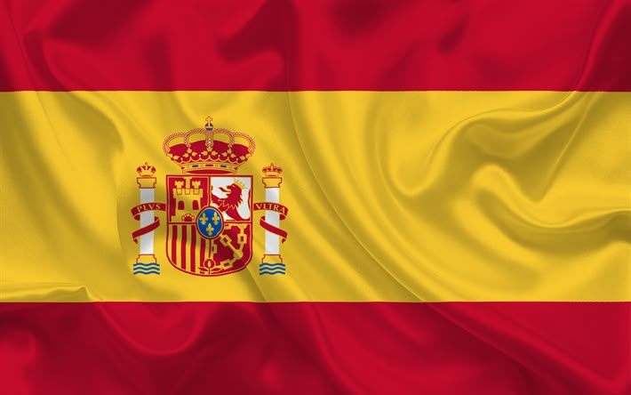
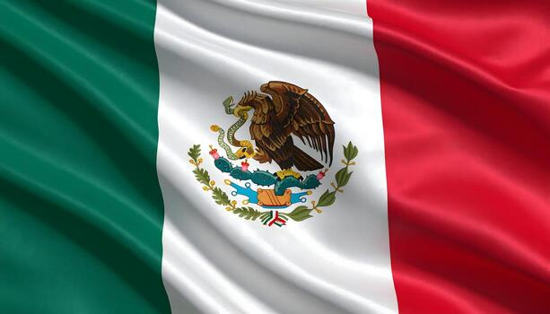
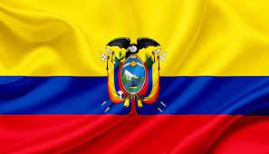

| Periódico | Enlace | Historia de creación | |
|---|---|---|---|
|
 España |
El País digital | www.elpais.es |
Fundado en 1976 en Madrid. Su primer número apareció el 4 de mayo. Nació durante la transición democrática española. |
| ABC | www.abc.es |
Fundado en 1903 por Torcuato Luca de Tena. Comenzó como revista y luego pasó a diario. Su sede histórica está en Madrid. |
|
| El Mundo | www.elmundo.es |
Fundado en 1989 en Madrid. Su primer número salió el 23 de octubre. Se creó como un nuevo diario de información general. |
| Periódico | Enlace | Historia de creación | |
|---|---|---|---|
|
 México |
El Universal | www.eluniversal.com.mx |
Fundado en 1916 por Félix F. Palavicini. Su primera edición salió el 1 de octubre. Nació durante la Revolución mexicana. |
| La Jornada | www.jornada.com.mx |
Fundada en 1984 en Ciudad de México. Su primera edición circuló el 19 de septiembre. Surgió de un proyecto impulsado por periodistas. |
|
| Milenio | www.milenio.com |
Comenzó a publicarse en el año 2000. Nació como parte de Grupo Editorial Milenio. Con el tiempo amplió su presencia a medios digitales. |
| Periódico | Enlace | Historia de creación | |
|---|---|---|---|
|
 Ecuador |
El Universo | www.eluniverso.com |
Fundado el 16 de septiembre de 1921. Su creador fue Ismael Pérez Pazmiño. La primera edición circuló en Guayaquil. |
| El Comercio | www.elcomercio.com |
Fundado el 1 de enero de 1906 en Quito. Lo crearon los hermanos Carlos y César Mantilla Jácome. Su primera edición tuvo cuatro páginas. |
|
| Expreso | www.expreso.ec |
Fundado el 25 de julio de 1973 en Guayaquil. Su fundador fue Galo Martínez Merchán. Con los años amplió su cobertura nacional. |